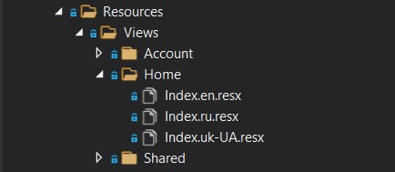
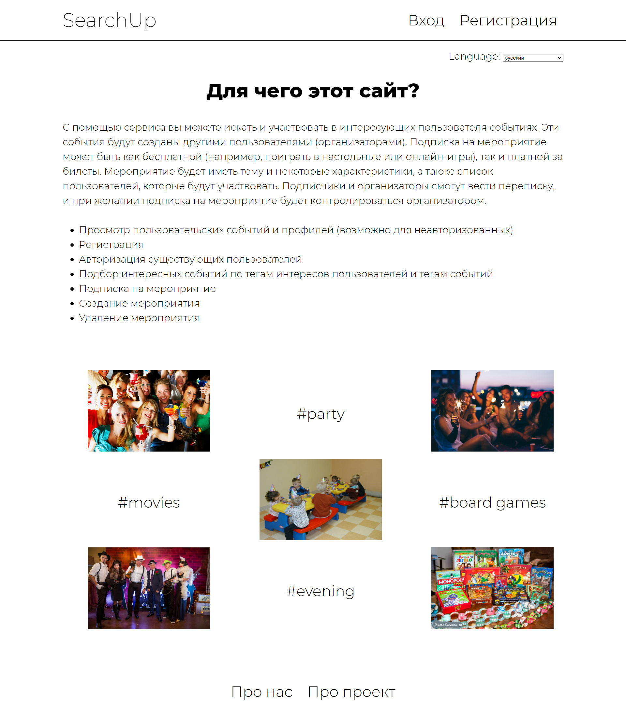
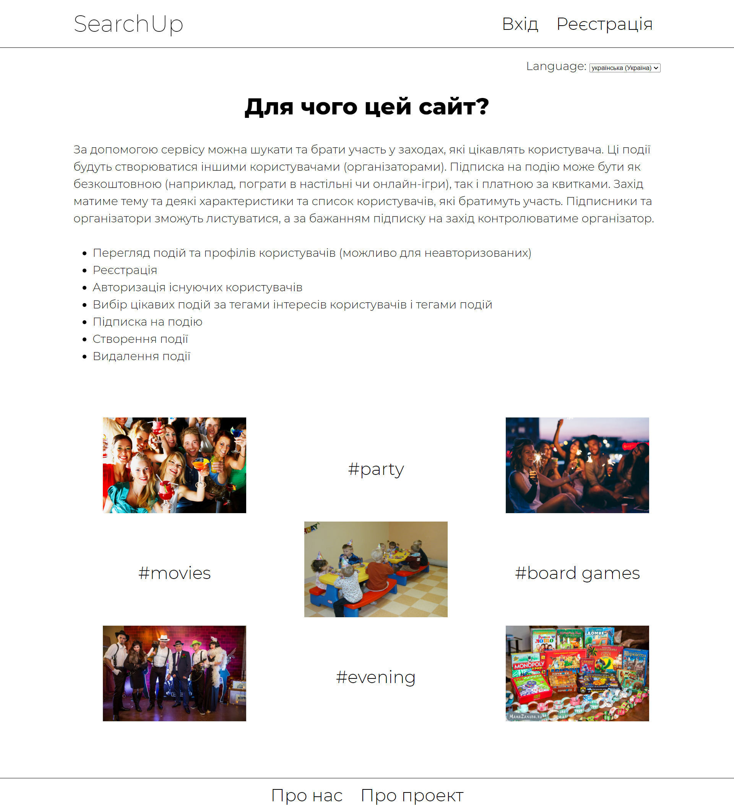
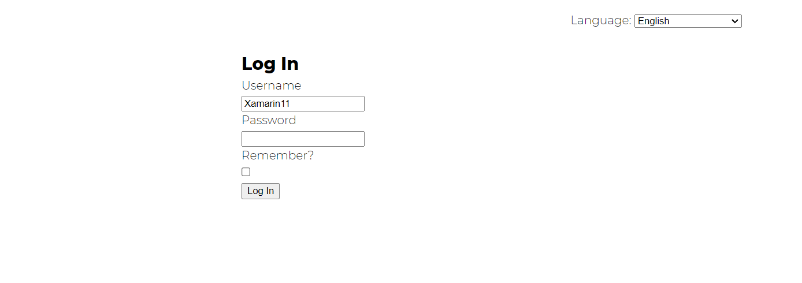
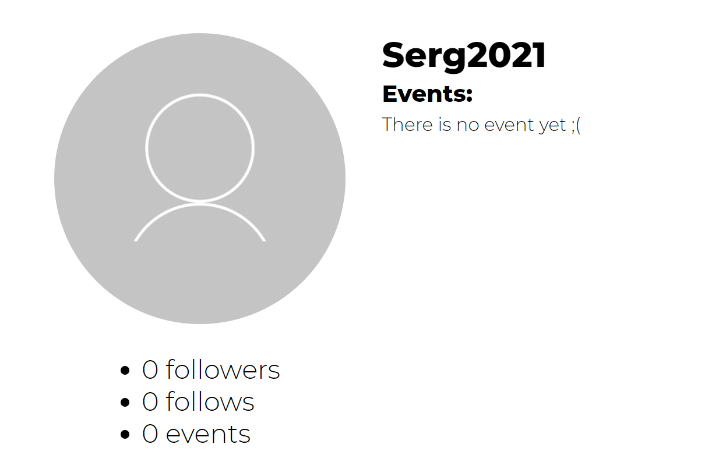
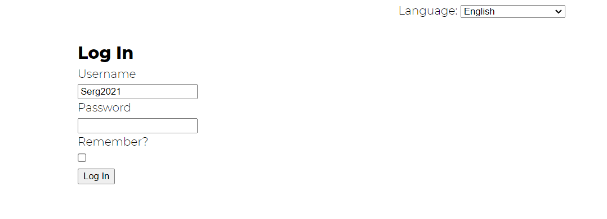

На ASP.NET ми створюємо файли ресурсів для кожної мови (на прикладі головної сторінки) :

Використання англійської мови на прикладі головної сторінки :
Використання російської мови на прикладі головної сторінки :

Використання української мови на прикладі головної сторінки :

Робота з Кукі
Текст коду для збереження вибору мови на пів року.
Текст коду для використання Кукі в автозаповнені полів форми.
При виході з акаунта, на сторінці входу поле Ім'я користувача автозаповнення останнім правильним введеним ім'ям користувача.
Приклад використання Кукі
Останній успішно авторизований користувач наразі відображається такий :

Заходимо в профіль іншого користувача :

Останній успішно авторизований користувач наразі відображається такий :

Оскільки кількість файлів та об'єм коду є значними, надаємо посилання на GitHub.